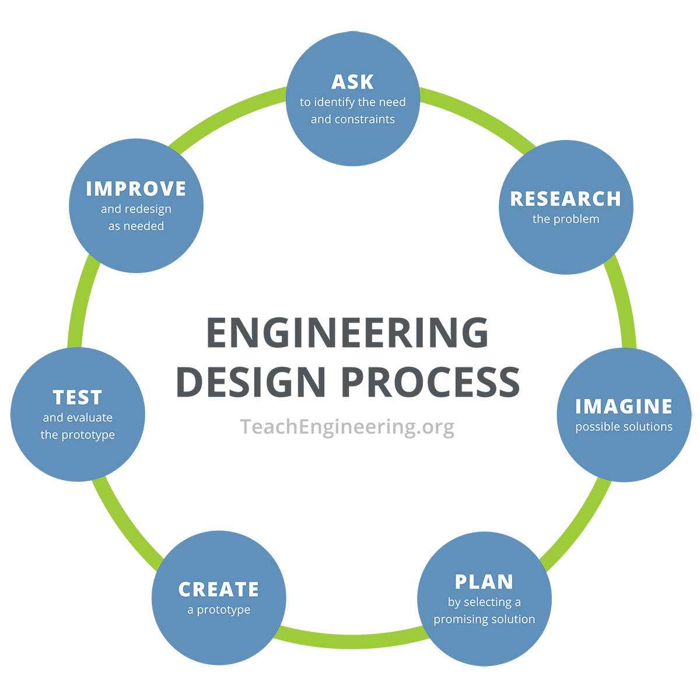

Introducing the Engineering and Design Process
Lesson Objectives
- Understand the need for an engineering portfolio, and/or other forms of documentation
- Explore methods of documentation, and the strengths and weaknesses of those methods
- Begin to keep an Engineering Notebook
Lesson Overview
The purpose of this lesson is to introduce a separate but important aspect of Engineering, and provide the central form of assessment for more independent days of work. This is a more straightforward lesson, but it does have one activity that students may need more support with.
Materials Needed
- 1 Notebook per Student (that will become their Engineering notebook for the Course)
- Pencil and paper for every student
- Engineering Design Process Video
- Engineering Design Process Graphic
Getting Started
- Begin with a whole group discussion about the ending question from last class. Compare students’ ideas, and encourage developing new ones. In the discussion, introduce the idea of the method being a cycle, repeated many times. (5 mins)
- Once the discussion reaches a natural conclusion or a lull, introduce a second question: How do you like to solve problems? Discuss this question with the class. (5 mins)
- Discussion 1 Prompts
- What answers did you come up with to last class’s question?
- For reference, the question was: If there are many ways to do the same thing, how do you find the best option?
- How are these answers different from each other? Similar?
- Could the answer be a mix of these ideas?
- Does finding the best option take only one try every time, or can it sometimes take multiple tries?
- Do the different attempts build on each other? Or are they completely separate?
- Does anyone know what the word “iterative” means?
- “It means that something is done in a loop, over and over, learning from each loop to build up a result.”
- What answers did you come up with to last class’s question?
Monitoring Progress
- When finished with these discussions, project the Engineering Design Process graphic for the class to see, and tell them that this simple tool is the key to solving any problem they can think of. Discuss briefly with the class about what they see, and what they think it means. (5 mins)
- Show the Engineering Design Process Video (5 mins)
- Once the video is finished, put the Engineering Design Process graphic back up, and pass the paper and pencils out to students. As mentioned in the video, guide the students on a couple minutes of each step of the EDP to design their “perfect toy” (30 mins)
- Facilitation for each step of the EDP “perfect toy” activity
- Ask (3-4 minutes):
- Ask the students to write down what “the perfect toy” means to them.
- It could be a number of things, such as the perfect gift for someone else, what would be their favorite toy, or a toy everyone would like
- Whatever the students decide on is alright, they just need to decide on something and write it down.
- Ask the students to write down what “the perfect toy” means to them.
- Research (4-5 minutes):
- With their ideas of what the prompt means, have students write down as many things as they can think of that they think that need to be included
- This could be things like size, shape, material, rules if it’s a game, functions, if it needs to work with something else that already exists, or any number of different things
- With their ideas of what the prompt means, have students write down as many things as they can think of that they think that need to be included
- Imagine (5 minutes):
- Have students then try and come up with as many ideas of toys as they can, with those features that they just wrote down. Encourage them to write, draw, or otherwise put their ideas on their paper.
- Note before they start that this process is called “Brainstorming”
- Have students then try and come up with as many ideas of toys as they can, with those features that they just wrote down. Encourage them to write, draw, or otherwise put their ideas on their paper.
- Plan (3 minutes):
- From their ideas, have students circle the things they want to include in their final design, which can be any aspect of their ideas from before.
- Create (5 minutes):
- Have students flip their paper over and try to draw their final design as best they can. Emphasize that students don’t have to be good at drawing, but should try and convey as many details and features as they can.
- Test (5 minutes):
- Have the students pair up and trade papers. Have each student ask each other about their toys, and explain their own to their partner.
- To end, have each student say one thing they like about their partner’s toy and one thing they could add.
- Improve (2 minutes):
- With the feedback from their partner and their own ideas, have each student write at least two things they would add, remove, or otherwise change about their toy to make it even better.
- Ask (3-4 minutes):
Wrapping Up
- When the class is finished, collect the papers and have the class come back together for one final discussion about how they feel about the day’s lesson. Ask students to ask questions about anything they don’t understand now, because they will be using this process very often. (5 mins)
- Emphasize in this discussion that they will have a lot of practice, so there’s no reason to worry if they need more time to wrap their heads around it, as well as the fact that there is no one “right” solution, and that’s why they come up with multiple ideas. Because of this, no one student’s ideas are necessarily better than another, and the class should make sure they’re supporting each other’s ideas and working together to continue testing and improving their work.
- Discussion Prompts:
- What did you think about creating your “perfect toy”?
- Did you like the improvements you made? Do you think you could improve it more?
- How do you feel about this process? Do you feel like you understand it?
- Can you define the word “iterative”?
- Do you think you could take this process and apply it to something else?
- What else can you think of that would use this process?
- Can you say what EDP stands for?
- What did you think about creating your “perfect toy”?
Assessment
- Successful completion of the “perfect toy” activity
- Active participation in class discussions
Preparation for next class
Next class will be a sort of repetition of this learning activity, but in the context of a more technical challenge. Look over the papers from this lesson’s activity, and try to note about how well each student seems to understand this concept. This will serve as an aid for gauging which students might need more help in the next lesson. Additionally, the EDP graphic can serve as a great printed poster for the classroom, if desired.
Resources
